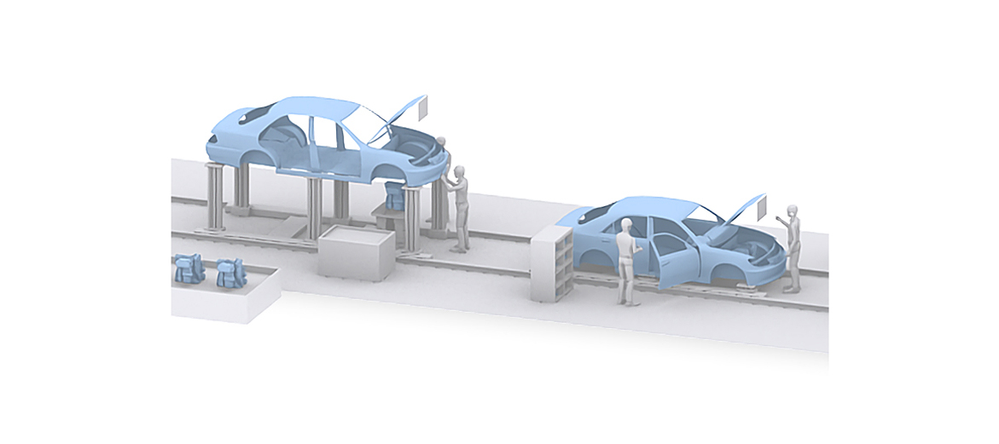
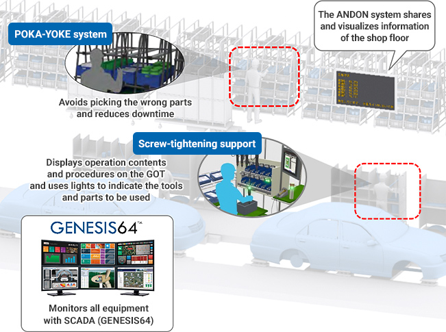
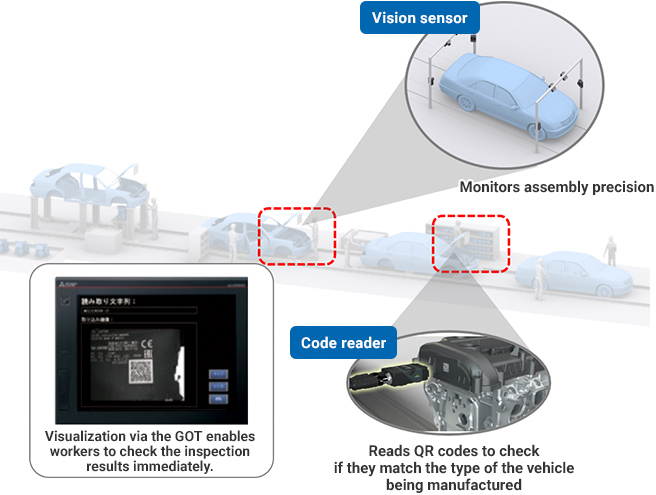

Solusi
Manufaktur Otomotif

Perakitan Kendaraan
- Memperjelas prosedur/waktu operasi untuk tenaga kerja yang beragam guna meningkatkan kualitas
- Mengukur dan terus memantau setiap bagian dari bodi kendaraan yang dirakit untuk meningkatkan kualitas

Solusi untuk Masalah
| Masalah | Solusi |
|---|---|
| Memperjelas prosedur/waktu operasi untuk tenaga kerja yang beragam guna meningkatkan kualitas | Memperjelas prosedur/waktu operasi dengan sistem pendukung ANDON, POKA-YOKE, dan pengencangan sekrup. |
| Mengukur dan terus memantau setiap bagian dari bodi kendaraan yang dirakit untuk meningkatkan kualitas | Terus memantau segala hal seperti presisi perakitan dan pembacaan kode QR dengan MELSENSOR. |
Masalah
Memperjelas prosedur/waktu operasi untuk tenaga kerja yang beragam guna meningkatkan kualitas
Solusi
Memperjelas prosedur/waktu operasi dan berbagi informasi lantai produksi dengan sistem pendukung ANDON, POKA-YOKE, dan pengencangan sekrup untuk mencegah produksi cacat akibat kesalahan operasi dan mengurangi waktu henti.
- Informasi yang diperoleh dari lantai produksi ditampilkan pada monitor ANDON melalui GOT2000, memungkinkan pekerja di lokasi, manajer lokasi, dan personel pemeliharaan di kantor untuk berbagi informasi.
- Digital Picking mencegah kesalahan manusia dan mendukung operasi perakitan/pengencangan sekrup untuk meningkatkan kualitas dan produktivitas.
Poin
- Proses operasi dapat ditinjau dan diperbaiki dengan lancar saat terjadi masalah.
- Kesalahan seperti mengambil komponen yang salah dapat dicegah dan waktu henti dikurangi.

Daftar Produk

Masalah
Mengukur dan terus memantau setiap bagian dari bodi kendaraan yang dirakit untuk meningkatkan kualitas
Solusi
Gunakan MELSENSOR untuk terus memantau segala hal seperti presisi perakitan dan pembacaan kode QR dari bodi kendaraan yang dirakit. Evaluasi produk untuk mencegah keluarnya produk cacat guna menjaga kualitas yang baik.
- Visualisasi melalui GOT memungkinkan pekerja untuk segera memeriksa hasil inspeksi.
- Digital Picking mencegah kesalahan manusia dan mendukung operasi perakitan/pengencangan sekrup untuk meningkatkan kualitas dan produktivitas.
Poin
- Pembacaan yang andal terhadap kode 2-D dengan kerusakan serius atau pola deteksi yang rusak, dan kode 1-D dengan refleksi, kerusakan, atau kegagalan pencetakan tersedia.
- Bidang visual yang luas memungkinkan pembacaan sekaligus beberapa kode dan pembacaan stabil kode pada posisi dan ketinggian yang bervariasi dengan satu pembaca kode.
